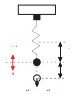
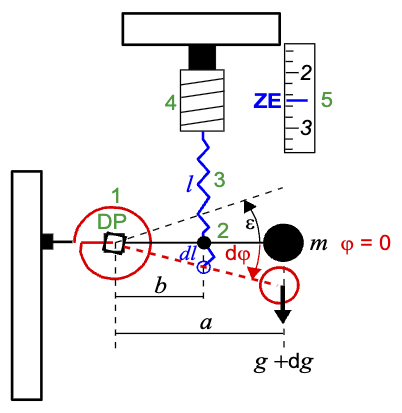
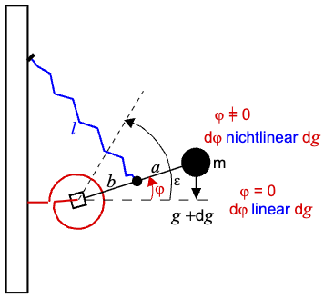
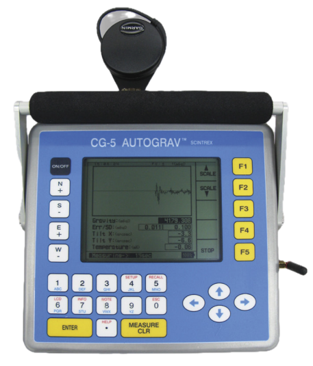
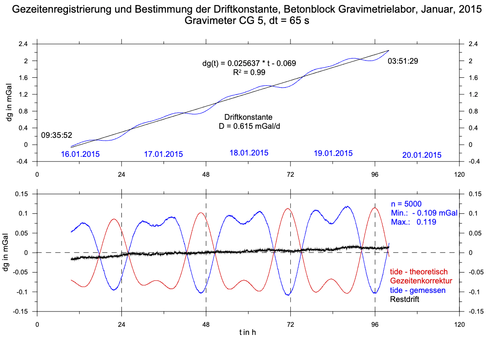

3 Messgrößen und Messgeräte
3.1 Messgrößen
- Absolute Schwerebeschleunigung \(\mathbf{g}\)
- Relative Unterschiede \(\Delta g\): vorherrschende Messgröße
- Vertikalgradient
- Horizontalgradient: selten gemessen
3.1.1 Absolute Schwerebeschleunigung \(g_{abs}\)
- Fundamentale Bezugsgröße
- liefert Punkte für Internationales Schwerestandardnetz WGS sowie Landesnetze
- Lange Messzeiten erforderlich
Bestimmung von \({g}_{abs}\) in Freiberg
Standort: Betonblock Gravimetrielabor
\[ \begin{align} g_{abs} & = 981043.767\ \text{mGal} \\ h & = 395.183\ \text{m} \\ \varphi & = 50 \textdegree \,55' \,30.3''\ \text{N} \\ \theta & = 13 \textdegree \,19' \,48.1''\ \text{E} \end{align} \]
Vergleich Potsdam: \(g_{abs} = 981260\ \text{mGal}\), Differenz von \(116\ \text{mGal}\) durch andere Lage und Höhe verursacht
3.1.1.1 Fallzeitmessungen
Messung der Fallzeit \(t\) mittels Fall- und Wurfgeräten (Galiei, 1590)
\[ \begin{align} t & = \sqrt{\frac{2 h}{g}} \\ g & = \frac{2 h}{t^2} \end{align} \]
Zur Bestimmung von \(g\) ist die simultane Erfassung von zwei Messgrößen (\(h, t\)) mit hoher Genauigkeit erforderlich.
Fehlerfortpflanzung:
\[ \Delta t = \Bigg| \frac{ \partial g }{ \partial t } \Bigg|^{-1} \Delta g = \frac{t}{2 g} \Delta g \]
\[ \Delta h = \Bigg| \frac{ \partial g }{ \partial h } \Bigg|^{-1} \Delta g = \frac{t^2}{2} \Delta g \]
Mit \(g=981\) Gal, \(h=10\) m und \(t=1.43\) s schätzen wir bei einer Genauigkeitsforderung von 1 mGal ab:
\[ \begin{align} \Delta t & = \frac{1.43\ \text{s}}{2 \cdot 981 \cdot 10^{3}\ \text{mGal}} \, 1\ \text{mGal} & = 0.73\ \mu\text{s} \\ \Delta h & = \frac{1.43^2\ \text{s}^2}{2}\, 10^{-5} \frac{\text{m}}{\text{s}^2} & = 10\ \mu \text{m} \end{align} \]
3.1.1.2 Schwingungszeitmessungen
Messung der Schwingzeit \(T\) eines Halbsekundenpendels von maximaler Auslenkung in die Ruhelage
\[ \begin{align} T & = \pi \sqrt{\frac{\ell}{g}} \\ g & = \frac{ \pi^2 \ell}{T^2} \end{align} \]
Genauigkeitsforderung 1 mGal, \(T=0.5\) s, \(\ell=1\) m.
Fehlerfortpflanzung:
\[ \begin{align} \Delta T & = \Bigg| \frac{ \partial g }{ \partial T } \Bigg|^{-1} \Delta g = \frac{T}{2 g} \Delta g \\ \Delta \ell & = \Bigg| \frac{ \partial g }{ \partial \ell } \Bigg|^{-1} \Delta g = \frac{T^2}{\pi^2} \Delta g \end{align} \]
\[ \begin{align} \Delta T & = \frac{0.5\ \text{s}}{2 \cdot 981 \cdot 10^{3}\ \text{mGal}} \, 1\ \text{mGal} & = 0.25\ \mu\text{s} \\ \Delta \ell & = \frac{0.5^2\ \text{s}^2}{\pi^2}\, 10^{-5} \frac{\text{m}}{\text{s}^2} & = 0.25\ \mu \text{m} \end{align} \]
3.1.2 Relative Schwerebeschleunigung \(\Delta g\)
Messung von Schweredifferenzen \(\Delta g\) gegen einen Bezugspunkt mit bekanntem \(g\)
oder
willkürliche Zuordnung eines Wertes für einen ausgewählten Basispunkt im Messgebiert mit \(g=0\).
Es tritt nur eine Messgröße auf: Längenänderung \(\Delta \ell\) einer Feder
Vorteile:
- Kurze Messzeiten
- Leichte Bedienbarkeit, gerige Abmessungen
- Hohe Genauigkeit
- Universeller Einsatz
3.2 Messgeräte zur Bestimmung von \(\Delta g\)
Gravimeter unterscheiden wir nach dem physikalischen Messprinzip in
- Statische Gravimeter: Feder-Masse-System
- Dynamische Gravimeter: Saitengravimeter
- Supraleitfähigkeitsgravimeter
3.3 Statische Gravimeter
- Lineare Systeme: Autograv CG-5 (Scintrex, Kanada)
- Nichtlineare astasierte Systeme: Sodin, Worden, Sharpre, LaCoste-Romberg
Bauarten:
- Vertikal-Schraubenfederwaage: Autograv CG-5
- Horizontal-Torsionsfederwaage: Sodin
3.3.1 Vertikal-Schraubenfederwaage
Gleichgewichtsbedingung:
\[ \begin{align} F_{SF} & = F_{g} \\ m g & = k \ell \end{align} \]
Linearität: Kleine Änderung von \(g\) führt zu kleiner Änderung von \(\ell\):
\[ \Delta g = \frac{k}{m} \Delta \ell \]

Genauigkeitsforderung: Federlänge \(\ell=0.1\) m, Messgenauigkeit \(\Delta g = 0.01\) mGal.
\[ \Delta \ell = \Bigg| \frac{ \partial g }{ \partial \ell } \Bigg|^{-1} \Delta g = \frac{\ell}{g} \Delta g \]
\[ \Delta \ell = \frac{0.1\ \text{m}}{981 \cdot 10^3\ \text{mGal}} \, 10^{-2}\ \text{mGal} \approx 10^{-9}\ \text{m} \]
3.3.2 Horizontal-Torsionsfederwaage
1–Torsionsfeder mit Torsionskonstante \(\tau\), 2–Waagebalken, 3–Messfeder mit Federkonstante \(k\), 4–Messspindel, 5–Messskala, DP–Drehpunkt
m–Probemasse, \(l\)–Länge der Messfeder, \(b\)–Abstand DP-Messfeder, \(\varphi\)–Auslenkung Waagebalken, \(\epsilon\)–Vorspannwinkel der Torsionsfeder

Schwereänderung \(\Delta g\):
- Hauptfeder wird auf Torsion beansprucht
- Winkeländerung \(\Delta \varphi\) wird durch Messfeder kompensiert
- Waagebalken wird über Messspindel in die ursprüngliche Lage \(\varphi=0\) zurückgeführt
Gleichgwichtsbedingung (Drehmomentengleichung) für \(\varphi=0\):
\[ m g a = \tau \epsilon + b k \ell \]
Benötigt werdem zwei Messpunkte: \(g_{1}(x_{1})\) und \(g_{2}(x_{2})\)
\[ m g_{1} a = \tau \epsilon + b k \ell_{1} \qquad m g_{2} a = \tau \epsilon + b k \ell_{2} \]
Differenz:
\[ g_{2} - g_{1} = \Delta g = \frac{k b}{m a}(\ell_{2} - \ell_{1}) \]
Federhub \((\ell_{2}-\ell_{1})\) wird an der Messspindel in Zählereinheiten \(\Delta \text{ZE}\) abgelesen.
Der Skalenwert \[ S = \frac{k b}{m a} \]
enthält geräteinterne Konstanten und wird über eine Kalibrierung des Gravimeters bestimmt.
Die relative Schwerebeschleunigung \(\Delta g\) wird über die allgemeine Gravimetergleichung \[ \Delta g = \text{S} \Delta \text{ZE} \]
bestimmt.
Für das Autograv CG-5 gilt \(S=1\), also erfolgt die Anzeige an der Apparatur direkt in mGal.
3.3.3 Astasierte nichtlineare Systeme
Gleichgewichtsbedingung für \(\varphi \ne 0\): \[ m g a \sin\varphi = \tau (\epsilon+\varphi) + b k \ell \]
\[ \frac{ \partial g }{ \partial \varphi } = \frac{\tau}{m a} \frac{\sin\varphi - (\epsilon + \varphi)\cos\varphi}{\sin^2\varphi} \]
keine Linearität zwischen \(\partial g\) und \(\partial \varphi\).

Höhere Empfindlichkeit bei verringerter Stabilität des Messystems, labile Gleichgewichtslage, lange Schwingzeit.
3.4 Das Gravimeter Autograv CG-5
- selbstregistrierend
- Messbereich 8000 mGal
- Empfindlichkeit 0.001 mGal
- Messwertanzeige 4615.312 mGal
- elektronische Neigungsmessung (Genauigkeit in Bogensekunden)
- geringe Drift

Messprinzip: Lineares System, keine Astasierung
- Eine elektrostatische Rückstellkraft hält die Testmasse in ihrer Ruhelage
- Eine Kapazitätssonde misst die Position der Testmasse
- Ein Feedback-System regelt die Spannung so, dass die Masse in Position bleibt
- Die zur Stabilisierung benötigte Spannung ist direkt proportional zur Änderung von \(g\)

3.5 Fehlereinflüsse
Zeitabhängige Fehler bewirken Gang des Gravimeters und erfordern Korrekturen
- Elastisches Verhalten der Quarzfeder (Hysterese, Langzeitdrift)
- Mechanische Störungen (Transport)
- Temperatur- und Luftdruckeffekte
- Gezeiten
Zeitunabhängige Effekte erfordern Kalibrierung oder Filterung
- Skalenwertfehler: Neukalibrierung
- Mikroseimische Unruhe: Filter
3.5.1 Driftkorrektur
Statische Gravimeter zeigen lineare Langzeitdrift durch unvermeidbare irreversible Veränderungen des elastischen Verhaltens des Quarzsensor-Systems.
Daraus resultieren eine begrenzte Lebensdauer des Gravimeters und ggf. kostspielige Serviceleistungen des Geräteherstellers.
Diese Änderungen erfasst man durch Aufzeichnung von Zeitreihen im Labor.
Daraus ermittelt man die Driftkorrektur:
\[ \Delta g_{Dr}(t) = (t - t_{s}) DR \]
DR–Driftkonstante in mGal/d, \(t_{s}\)–Messbeginn, \(t\)–Zeitpunkt der Ablesung
Bestimmung von DR aus kontinuierlicher Messung über einen Zeitraum von \(>24\) h.
